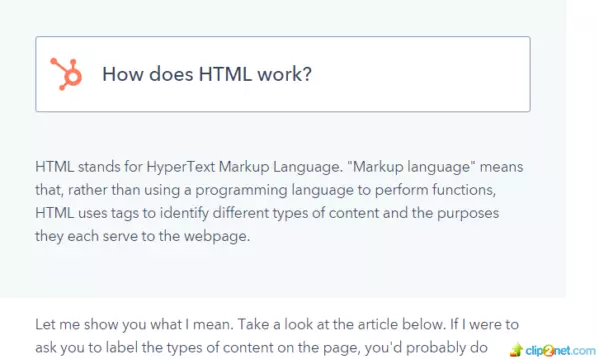
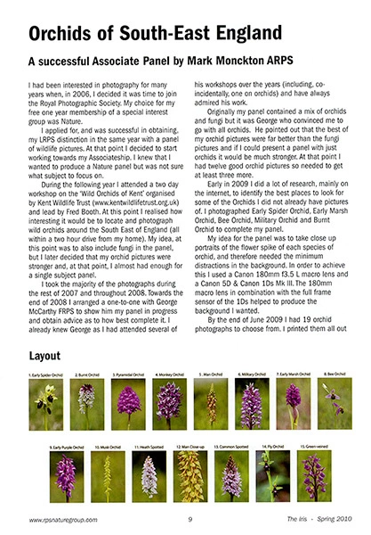

HTML

В первую очередь, необходимо понять, что HTML - основа каждой веб-страницы, независимо от сложности сайта или количества задействованных технологий. Это важный навык для любого веб-профессионала и отправная точка для всех, кто имеет отношение к созданию или редактированию контента в Интернете. И, к счастью для нас, ему удивительно легко учиться.
Как работает HTML?
HTML отображает язык разметки гипертекста. «Язык разметки» означает, что HTML использует теги для идентификации различных типов контента и целей, которые каждый преследует на веб-странице.

Взгляните на статью ниже. Если бы мы попросили вас структурировать текст, вы, вероятно, легко бы справились: наверху находится заголовок, затем подзаголовок, основной текст и изображения внизу.

Для разметки разметки используются HTML-теги, также известные как «элементы». Они имеют довольно интуитивные типы: заголовки, теги абзацев, теги изображений и т. д.
Каждая веб-страница состоит из нескольких тегов HTML, обозначающих определенный тип контента на странице. Каждый тип содержимого на странице «обернут», т. е. окружен тегами.
Например, слова, которые вы сейчас читаете, являются частью абзаца. Если кодировать эту страницу с нуля, этот абзац начался бы с тега абзаца открытия: <p> Часть «тега» обозначается открытыми скобками, а буква «p» сообщает компьютеру, что мы открываем абзац вместо какого-либо другого типа содержимого.
После того, как тег был открыт, все следующее содержимое считается частью этого тега, пока вы не закроете его. Когда абзац заканчивается, нужно ставить тег заключительного абзаца: </p>. Обратите внимание, что закрывающие теги выглядят точно так же, как открывающие теги, за исключением того, что после левой угловой скобки есть косая черта. Вот пример:
<p> Это абзац. </p>
Используя HTML, вы можете добавлять заголовки, форматировать абзацы, разрывы строк, создавать списки, выделять текст, создавать специальные символы, вставлять изображения, создавать ссылки, создавать таблицы, управлять некоторым стилем и многое другое.
Общее представление